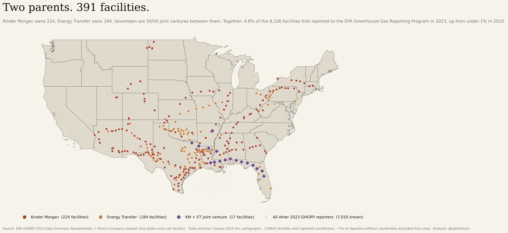
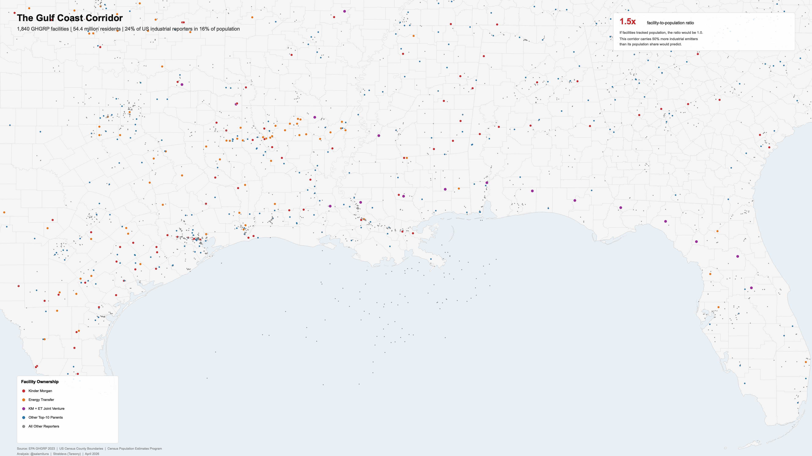
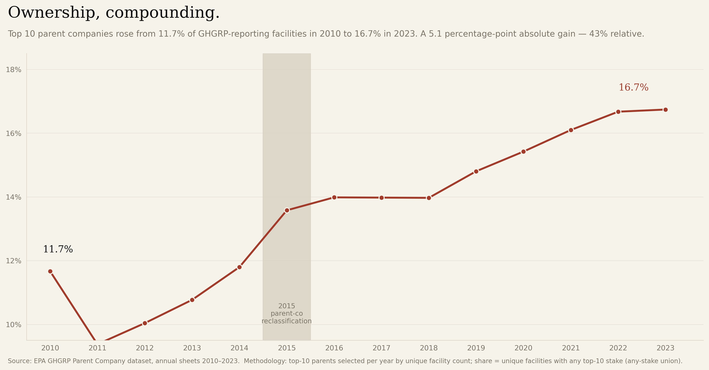
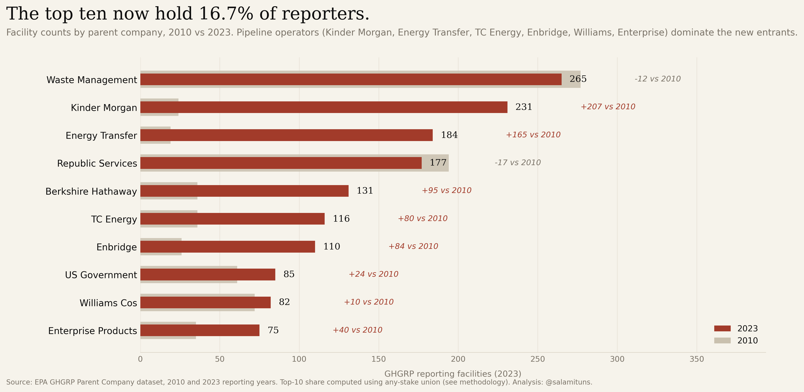
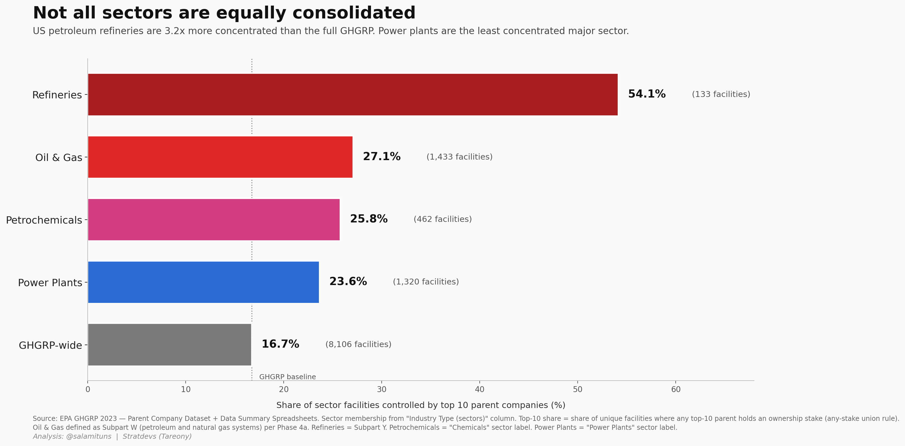
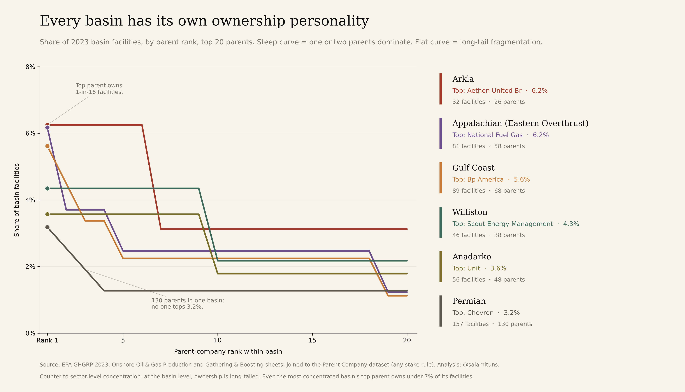
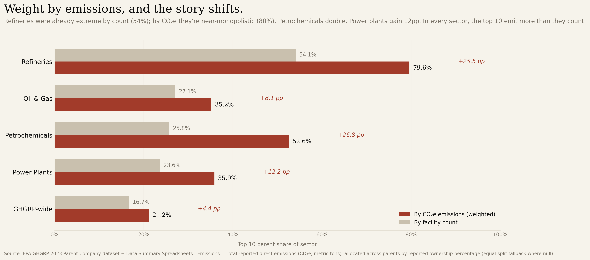
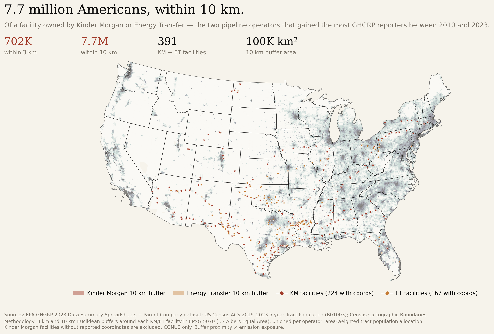
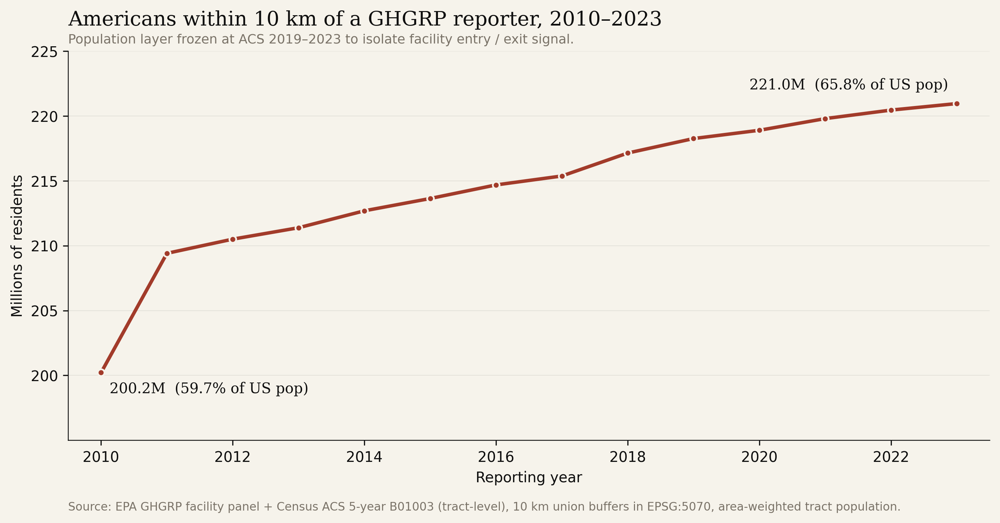

Who owns America’s industrial emissions.
Fourteen years of the EPA Greenhouse Gas Reporting Program, reconciled at the parent-company level. 8,106 facilities, 3,327 parents, and a consolidation pattern that follows the Gulf Coast pipeline grid.
The Numbers
The Figures
{kind=link}

The 7,401 facilities that file every year.
Every Lower-48 facility in the 2023 reporting year, sized by its ultimate parent’s facility count. Kinder Morgan (231) and Energy Transfer (184) read as a lattice along the Gulf Coast pipeline corridor.
{kind=link}

The pipeline corridor, mapped.
Zoomed to the Gulf Coast. Seventeen joint-venture facilities (Florida Gas Transmission, Transco, others) read as the shared backbone of otherwise-separate parents.
{kind=link}

The top ten went from 11.7% to 18.0%.
Top-10 parent share of reporting facilities, 2010–2023. A 54% relative increase. Only 27 companies filed every year across the window.
{kind=link}

Two parents run 415 facilities.
Kinder Morgan went from 24 facilities in 2010 to 231 in 2023 (+862%). Energy Transfer, 19 to 184 (+868%). The chart ranks the ten largest reporters and their growth since 2010.
{kind=link}

Petroleum refining is the most concentrated sector.
HHI by reporting sector. Refining sits at 849; onshore oil & gas production is fragmented by contrast. The higher the HHI, the fewer hands hold the emissions.
{kind=link}

Every major basin tells a different ownership story.
Permian: top-1 = 3.2%. Appalachia: different leader, different curve. Same dataset, different consolidation regimes depending on geology and history.
{kind=link}

Facility count and tonnage rank differently.
The parent with the most sites is not always the biggest emitter. Weighted by CO₂e, the leaderboard rearranges. Both views matter; only one is usually reported.
{kind=link}

Two parents alone reach 7.7 million neighbors.
Zoom on Kinder Morgan and Energy Transfer in 2023. Census-tract populations area-weighted into 10 km buffers; 702,000 within 3 km. Combined footprint: ~100,000 km² — roughly the area of Kentucky. Two companies, the population of Virginia.
{kind=link}

200 million to 221 million, across fourteen years.
Every reporting facility in every year, 2010–2023. +20.7 million residents newly inside a 10 km buffer — roughly the population of Florida. The curve rises because facilities enter the program, not because Americans moved; the population layer is frozen at the 2019–2023 ACS to isolate the facility signal.
We’re debating whether to dismantle the monitoring system while the market it monitors is consolidating into fewer hands.
Context
In September 2025 the EPA proposed removing 46 of 47 source categories from mandatory reporting under the GHGRP — the program that produced this dataset. The proposal is out for comment as of this writing.
The question isn’t whether the program is imperfect. It’s whether the answer to imperfection is dismantling the instrument during a period of rapid ownership consolidation in the industries it measures. The figures above are what’s on the table.
Data
- EPA GHGRP Parent Company Dataset
- Fourteen reporting years, 2010–2023. Facility-to-parent reconciliation with name-variant harmonisation and ownership-share weighting for joint ventures.
- EPA GHGRP 2023 Data Summary
- Facility-level emissions (CO₂e), sector classification, geocoordinates, and unit-level reporting for the latest year.
- US Census Tract & County Boundaries
- 2020 TIGER/Line tract and county polygons with ACS 5-year population estimates, used for the 10 km exposure buffer.
Method
Parent-company reconciliation is the load-bearing step. EPA reports facility-level ownership with name variants (“Kinder Morgan”, “Kinder Morgan Inc.”, “KM CO2 Pipeline LLC”) that collapse to the same ultimate parent. Joint ventures are weighted by ownership share so facilities are not double-counted across partners. The 27-company “reported every year” count reflects continuous presence across all fourteen years, not cumulative presence.
Concentration metrics are the standard antitrust instruments: top-N share, and the Herfindahl-Hirschman Index (HHI = Σs² × 10,000). HHI is reported per sector rather than nationally, because sectors don’t substitute for each other.
Population exposure uses EPSG:5070 (USA Contiguous Albers Equal Area) for accurate distance calculations. Ten-kilometre buffers are drawn around each facility point, unioned across facilities within a year, intersected with Census tract polygons (ACS 5-year, 2019–2023, Table B01003), and area-weighted into the buffer so every tract resident is counted once regardless of overlap. Figure 08 is scoped to Kinder Morgan and Energy Transfer; Figure 09 is the full 8,106-facility panel across all fourteen years. The population layer is frozen at the 2019–2023 ACS across every year: tract-level population change is <20% over the window while facility count grew 55%, so the curve is a facility-entry signal, not a demographic one.
Processing is Python (pandas, geopandas, shapely). Static figures are matplotlib at 300 DPI. Maps use CARTO basemaps. Full pipeline, intermediate data, and figure code are on GitHub.